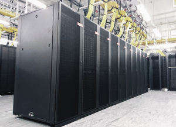

Research Computing Systems Engineer
Dec 2017 to present
I provide specialist professional expertise in the design, planning, implementation, support, promotion, and maintenance of the University's High Performance and Data Intensive Computing services. I help look after both Iridis 5 and Irids 5 clusters. I have run a number of projects include a significant public nodes on Iridis 4 to RHEL 6.10, building a new development cluster on Iridis 5, and development of the Data Intensive Computing Service that to date had resulted in at least one publication.

CNC Programmer
Sept 2004 to July 2008
I was responsible for programming, tooling and running the production of orders in excess of 10,000+ parts. Generally working with Citizen CNC Sliding Head Machining Centres, these parts had sizes from 42 mm to 0.3 mm in diameter, with machining tolerances down to 10 micrometers and ISO 9001 standards. The tool making aspct lead to me gained prefiancy in lathes, mills, bench and Cylindrical grinders, belt sanders, and heat treating (tempering and harding).